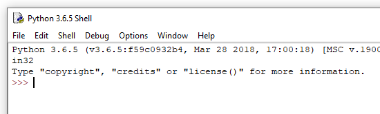

Въведение в Python¶
Python е много популярен език за програмиране с общо предназначение. Той стана известен със своята простота, лекота на учене и бързо програмиране. Много професионални разработчици използват Python поне като спомагателен език, защото бързо и лесно автоматизират различни задачи с него. Поради гореспоменатите добри качества, все повече потребители на Python са сред хора от други професии, които използват програмиране в различни области. Езикът за програмиране на Python е безплатен за използване и около него се формира голяма общност, която допринася за неговото по-нататъшно развитие и обща поддръжка в Интернет.
Програмният език на Python дава яснота, че програмирането не е само за професионални програмисти, както и писането не е само за професионалните писатели. Има все повече и повече различни работни места, които могат да станат някак по-лесни, по-успешни или по-продуктивни с умерени умения за програмиране. Следователно, този наръчник не е само за бъдещи професионалисти по програмиране, но и за всеки, който може да се възползва от програмирането в работата си (или другаде).
Така че, нека да разгледаме основите на Python и да видим как се пишат команди и програми на този език за програмиране.
Интерпретаторът на Python¶
За да изпълним програми, които пишем на Python, се нуждаем от програма, наречена Python interpreter. Тази програма интерпретира и след това изпълнява Python команди. Преводачите на Python могат да приемат цели програми и да ги изпълняват, а също така могат да работят в интерактивен режим, в който всяка команда, която въведем, се изпълнява веднага.
Средата, в която интерпретира Python, се нарича обвивка. Има различни , в които може да се изпълни съответният Python интерпретатор. Затова имаме няколко начина да стартираме обвивката на Python.
Shells online
Уебсайтът https://www.python.org/shell съдържа shells online (онлайн обвивка), която можете да използвате веднага за интерактивна работа (достатъчно е да имате достъп до интернет).

Инсталиране на Python и средата IDLE
За да научите програмирането на Python, със сигурност е полезно да изтеглите Python от https://www.python.org/downloads/ и да го инсталирате, ако той вече не е инсталиран на вашия компютър. С инсталирането на Python получавате и програма, наречена IDLE (интегрирана среда за разработка и обучение). Тази интегрирана среда включва и обвивка, в която можете да изпълнявате Python програми. Когато стартирате IDLE на вашия компютър, получавате следния прозорец, в който можете да работите интерактивно и да пишете и изпълнявате програми на Python.
{kind=link}
Shell в команден прозорец
Друг начин за стартиране на обвивката на Python е да отворите команден прозорец (в системите на Windows това се извършва чрез стартиране на програмата cmd) и след това въведете Python в прозореца на командите (тук приемаме, че Python е инсталиран така, че да е достъпен от всяка папка , в противен случай първо трябва да се позиционирате в папката на интерпретатора Python).

Можете да изберете всяка обвивка, която харесвате, всички те се използват по един и същи начин.
Интерактивна работа¶
Стартирайте вашата Python Shell. >>> символите, които виждате, представляват подкана. По този начин интерпретаторът на Python ни казва, че е готов да получи командата.
Когато работите интерактивно, интерпретаторът на Python може да се използва и като калкулатор - въведете израз и получете неговата стойност:
>>> 3 + 2
5
>>> 3.25 + 2.25
5.5
>>> 3 - 2
1
>>> 4 * 2
8
>>> 4 / 2
2.0
Следните символи се използват за основни изчислителни операции в Python (както и в повечето езици за програмиране):
събиране:
+изваждане:
-умножение:
*деление:
/
В допълнение към тези основни и най-често използвани, понякога се нуждаем от няколко други операции, които се използват по-рядко. Тези, които са:
целочислено деление (заемане на цялата част от коефициента):
//, например стойността на израза \(7 // 2\) е \(3\).статък от деление:
%, например стойността на израза \(7 \% 2\) е \(1\).силовият оператор:
**, например стойността на израза \(2 ** 4\) е \(2^4 = 16\).
>>> 7 // 2
3
>>> 7 % 2
1
>>> 2 ** 4
16
CКомпютрите разграничават цели числа и реални числа, записват ги по различен начин в паметта си и правят изчисления с тях по различни начини. Така че в програмирането стойност 2.0 не е съвсем същата като 2, въпреки че стойностите са математически равни (знакът == се използва за сравняване на двете стойности).
>>> 2.0 == 2
True
>>> type(2.0)
<class 'float'>
>>> type(2)
<class 'int'>
Това, което виждаме, означава, че първото число е истинско, а второто е цяло число (думата float обозначава реални числа, а int означава цели числа).
В тази връзка имайте предвид, че в Python резултатът от обикновеното деление / винаги е действително число, дори когато операндите са цели числа и са делими (няма остатък). Когато искаме резултатът от разделението между две цели числа да е цяло число, трябва да използваме оператора на цяло число //.
>>> 6/2
3.0
>>> 6//2
3
За останалите посочени операции резултатът е цяло число, когато и двата операнда (числата, към които се прилага операцията) са цели числа, и истински, ако поне един операнд е реален.
>>> 3 + 2
5
>>> 3.0 + 2
5.0
>>> 3 + 2.0
5.0
>>> 2.0 ** 4
16.0
Правилата за изчисляване на стойностите на израза са същите като в математиката:
Мощността се изчислява преди останалите операции. Ако има няколко операции за захранване на последователността, те се извършват от дясно на ляво.
Операциите за умножение, деление и остатък се прилагат преди събиране и изваждане. Когато има повече от един ред, те се изпълняват отляво надясно.
Когато се нуждаем от различен ред на изчисление, използваме скоби (частта в скобите се изчислява първо).
>>> (5-3) * (2+2)
8
>>>
Завършваме работата си в обвивката на Python, като въвеждаме командата quit().
>>> quit()
Изчисления-проверете знанията си
Уверете се, че разбирате правилата за изчисляване в Python, като отговорите на следните въпроси.
- 15
- The + sign indicates addition, and the sign * multiplication.
- 30
- Correct!
- 50
- Note also the priority of operations (the same as in mathematics).
- 125
- The + sign indicates addition, and the sign * multiplication.
Q-1: Каква е стойността на израза 5 + 5 * 5?
- 3
- Read about calculating again
- 0
- Note also the priority of operations (the same as in mathematics).
- 5
- Correct!
- 6
- The % sign represents reminder operation.
Q-2: Каква е стойността на израза 4 + 11 % 5?
- 60
- symbols ** represent power operator
- 100000000
- Correct!
- 1000000
- Power operators are performed from right to left, so that a ** b ** c is the same as a ** (b ** c).
- 300
- Both specified operators are power operators.
Q-3: Каква е стойността на израза 10 ** 2 ** 3?
- 1.666666
- Read again about the symbols and the order of execution (priority) of operations
- 1
- The integer division is performed first
- 11.666666
- The // symbol represents an integer division.
- 12
- Correct!
Q-4: Каква е стойността на израза 15 - 10 // 3?
- 5.0
- Correct!
- 5
- The result of this division is always a real number.
- 1.0
- First the part in the parenthesis is calculated.
- 1
- First the part in the parenthesis is calculated.
Q-5: Каква е стойността на израза 15 / (5 - 2)?